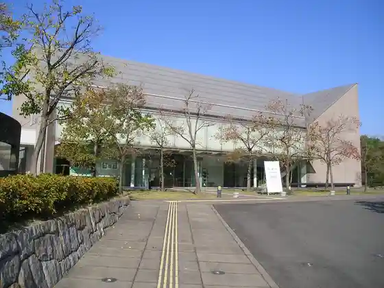
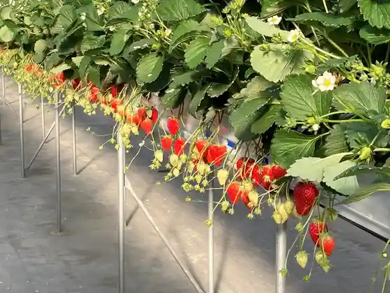
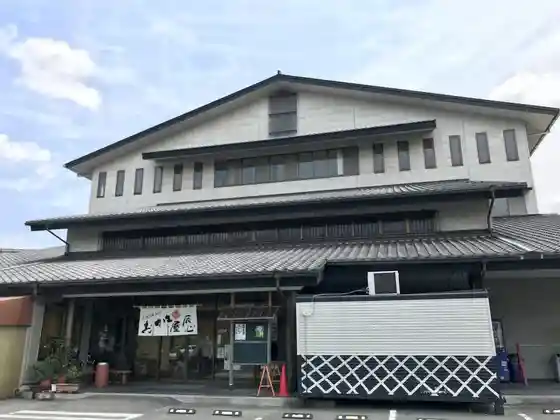

Arte Museum Nagoya (Arute Museum Nagoya)
Chita, Aichi · 03-5572-6072 · Official / source link
Chita Rekishi Minzoku Museum (Fuyutorii Chita)
Chita, Aichi · 0562-33-1571 · Official / source link

very berry farm
Chita, Aichi · 080-2668-6576 · Official / source link

Okaki Ya Tatsu Kokoro
Chita, Aichi · 0562-56-0280 · Official / source link

Shinmaiko Coast
Chita, Aichi · 0562-51-5637 · Official / source link
Sori Midori to Hana no Fureai Park
Chita, Aichi · 0562-54-2911 · Official / source link
Okada no Furui Machinami Mi
Chita, Aichi · 0562-56-4722 · Official / source link
Taichi In
Chita, Aichi · 0569-42-0909 · Official / source link
Owari Hachiman Shrine
Chita, Aichi · 0562-32-1620 · Official / source link
Taiko Tera (Chita no Daruma Tera)
Chita, Aichi · 0569-42-0702 · Official / source link
Sutoroberii Farm Sobii
Chita, Aichi · 0562-56-6039 · Official / source link
Shinmaiko Marin Park Burusan Beach
Chita, Aichi · 0562-56-3980 · Official / source link
Sori Ike
Chita, Aichi · 0562-51-5637 · Official / source link